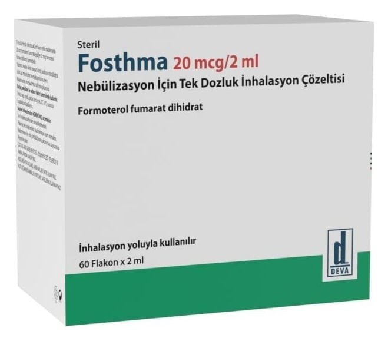

Fosthma 20 mcg / 2 ml Nebülizasyon İçin Tek Dozluk İnhalasyon Çözeltisi, 30 Adet

Ne için kullanılır
KT · Bölüm 1FOSTHMA, formoterol fumarat dihidrat adlı etkin maddeyi içeren ve nefes yolunuzun açık tutulmasını sağlayan bir ilaçtır.
FOSTHMA, her sa şede 1 adet tek doz flakon olacak şekilde ambalajlanmıştır. Her flakon 2 ml ürün içermektedir. FOSTHMA, 30 veya 60 adet flakon içeren saşe ambalajlarda takdim edilmektedir.
FOSTHMA, bronş adı verilen akciğere giden hava yollarını genişletici bir ilaçtır. Kronik obstrüktif (tıkayıcı) akciğer hastalığı (kısaca KOAH) olarak da bilinen anfizem ve kronik bron şit (kronik bronş iltihabı) gibi diğer hava yolu hastalıklarında nefes alma problemlerinin, hırıltı, öksürük, göğüste baskı hissi ve nefes darlığı gibi semptomların tedavisinde kullanılır. FOSTHMA, akut olarak kötüleşen KOAH hastalarında kullanılmamalıdır. Astım hastalarında kullanılmaz.
FOSTHMA akci ğerlere ulaşan küçük hava yollarını genişletmek ve bunların yaklaşık 12 saat süreyle gev şemiş ve açık kalmasına yardımcı olmak suretiyle nefes almayı kolaylaştırır. Eğer doktorun talimatlarına göre kullanılırsa, FOSTHMA hem gündüz hem de gece hastalığınızın belirtilerini azaltacaktır.